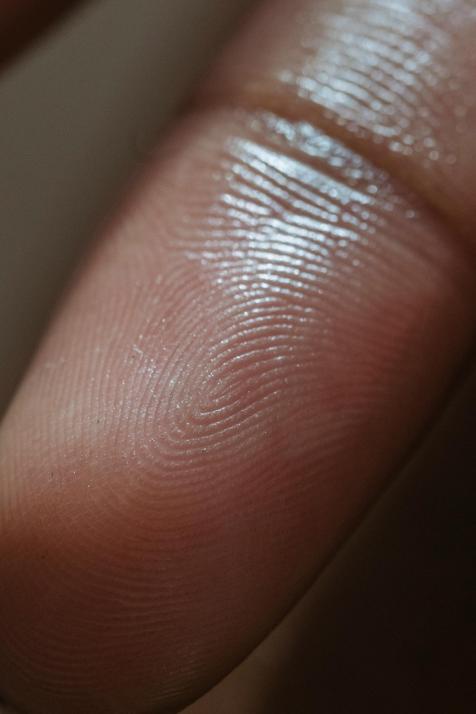

Discover Fascinating Fun Facts – Broaden Your Perspective!
Fact: Every person's fingerprint is unique, even identical twins!
The ridges and patterns on your fingertips form a unique pattern that no one else in the world has. This distinctiveness makes fingerprints a valuable tool in forensic science and identification.